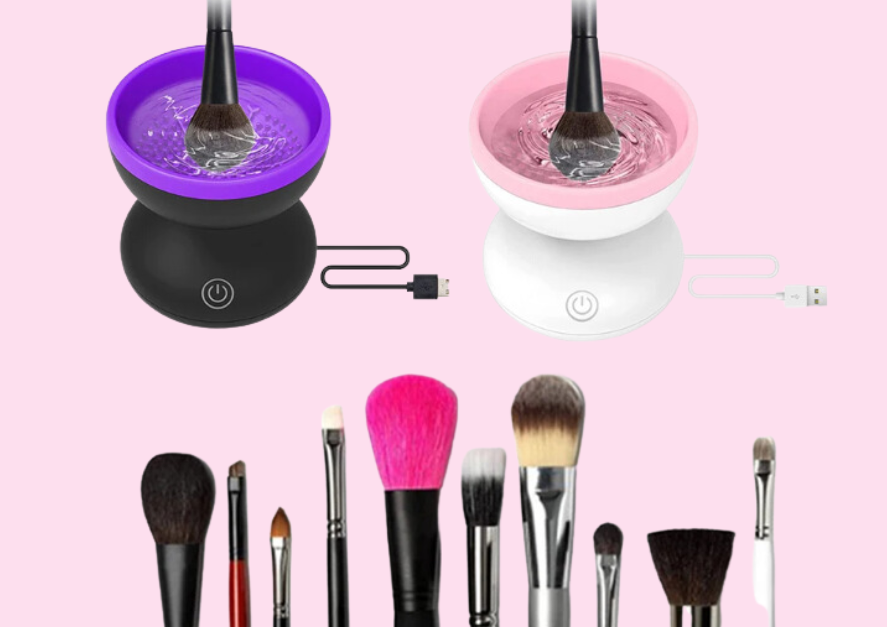
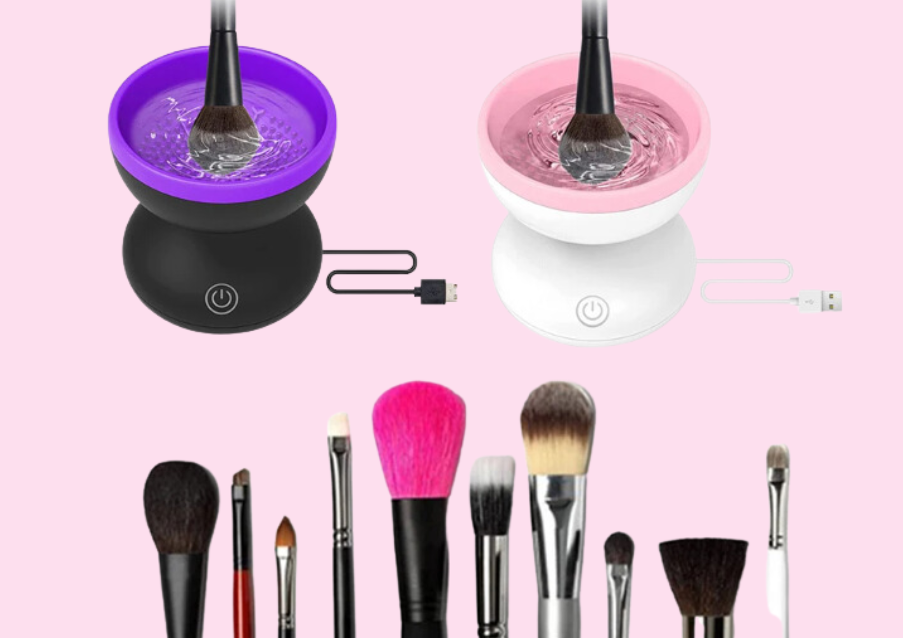

Pink Electric Makeup Brush Cleaner Machine, Windspeed Silicone Brush Cleaner Machine Beauty Blender Cleanser For Beauty Makeup Brushes,
200+ bought in past month
$17.99
About this item :
New Upgrade :
Different from other cosmetic brush cleaning tools, this electric makeup brush cleaner machine(Patented design) improves the concave and convex parts of the cleaning area, and heightens the convex part so that they can fully contact the interior of the cleaning brush and wash the cosmetic residues.
USB Power Supply :
This makeup brush cleaner machine(Patented design) uses the USB plug-in method to work, abandoning the traditional battery power supply method, and it can be used when the power is turned on and the switch is pressed.
Protect Makeup Brushes :
Excessive cleaning speed will reduce the service life of makeup brushes. The moderate rotation speed of this beauty blender cleanser(Patented design), can not only deep clean the residues of makeup brushes, but also prevent the bristles on the makeup brushes from being damaged, gentle cleaning.
Save Time :
The cleaning port of this silicone brush cleaner(Patented design) is large, and there are many protrusions inside, which can clean multiple makeup brushes at the same time, and there is no limit to the size of the makeup brushes, saving time and effort.
Portable & Lightweight:
The size of this electric makeup brush cleaner machine(Patented design) is only 3.4x3.5 inches, it is small in size and lightweight, it will not take up too much desktop area, and it can also be placed in bags, suitcases, luggage, and is easy to carry.